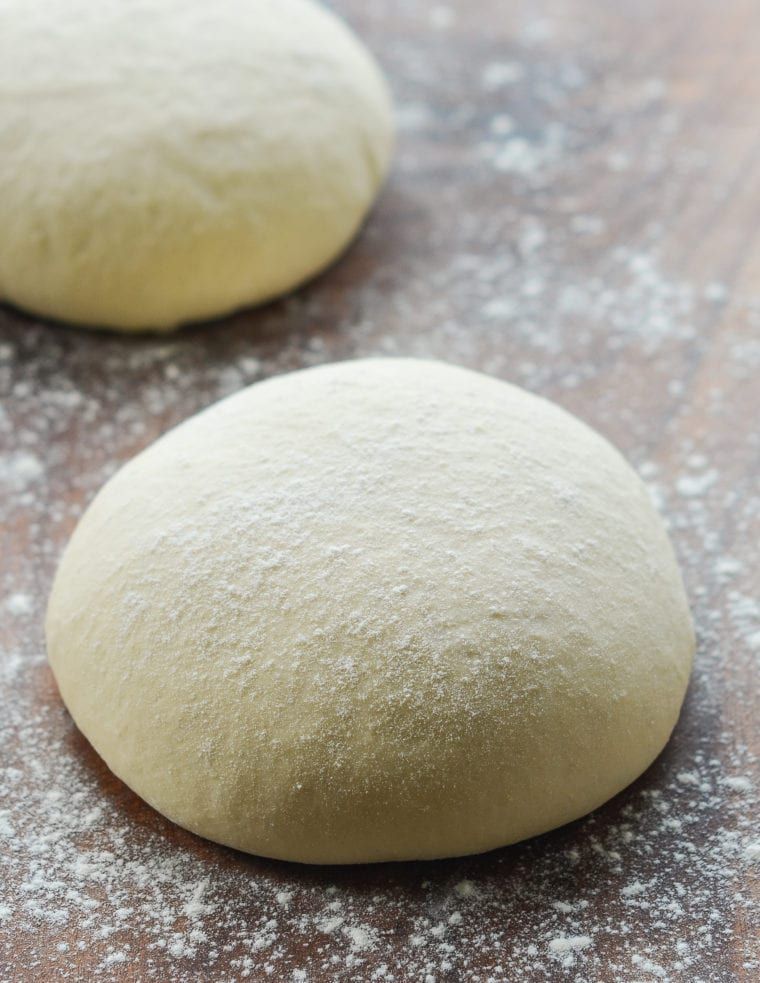

Pizza Dough

This is a simple and tasty overnight pizza dough.
Pizza is one of the easiest things to make at home. You can put any toppings suiting your taste.
Ingredients
- 153g 00 flour
- 153g all purpose flour
- 8g fine sea salt
- 2g active dry yeast
- 4g extra virgin olive oil
- 220g luke warm water
Steps
- Combine the two flours and salt, mix well
- Create a small well and add 200g water, yeast and oil in the well
- Knead until well combined or aobut 3 minutes
- let mixture rest for 15 minutes
- Knead dough again for 3 minutes
- Cut into two equal pieces and shape into balls
- Place of a flour tray/surface; cover with damp cloth to let rise 3 to 4 hours at room temp or overnight in fridge
- to make pizza, please dough ball on lighly floured surface and stretch with your fingers
- Brush surface with oil; add favourite toppings
- Bake at 450 deg F for 10 to 15 minute